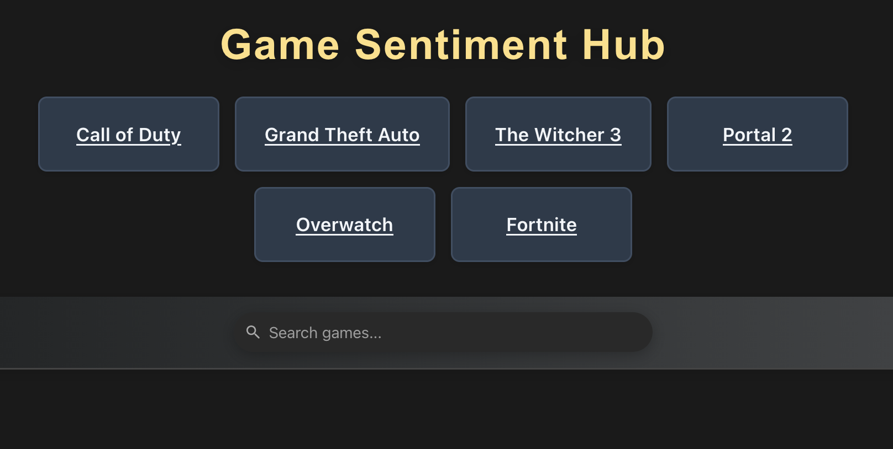

📌 Personal Contribution
Owned MongoDB + CRUD backend, built IGDB/Reddit data ingestion components, maintained API auth/keys, and supported team members in integration/debugging.
📝 Description
Full-stack Flask and React app that aggregates game data from Twitch’s IGDB API, Reddit posts, and YouTube comments, analyzes sentiment with Hugging Face, and visualizes results from a MongoDB backend.
🔑 Key Learnings
- Built multi-source ETL pipelines and normalized game/sentiment data.
- Designed a document schema supporting fast query + update flows.
- Integrated third-party APIs with reliable auth/refresh handling and debugging support.
-

🚀 How to Run This Project
Prerequisites
- Firefox (front end must be run here)
- Python 3.10+
- Node.js & npm
1. Backend Setup (Flask)
python3 -m venv venv
source venv/bin/activate # On Windows: venv\Scripts\activate
pip install -r requirements.txt
cd backend
# Create a .env file with your API keys and secrets (see .env.example if available)
python app.py
The backend will run on http://127.0.0.1:5000
2. Frontend Setup (React)
Open a new shell
cd frontend/sentiment_app
npm install
npm start
The frontend will run on http://localhost:3000
3. Usage
- Open the frontend URL in Firefox.
- Enter a game title to analyze sentiment and view live data.